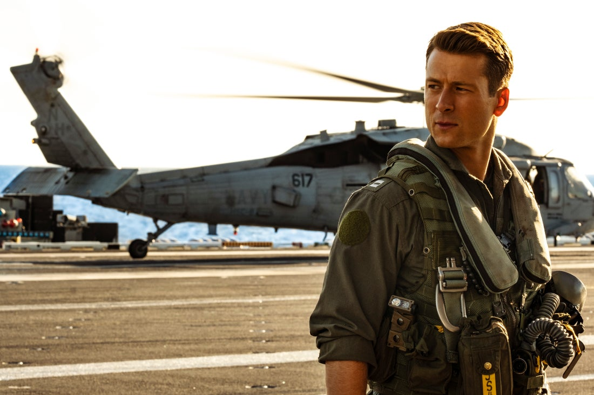

전 세계 최고의 액션배우 톰 크루즈가 돌아왔다!

전대미문, 유일무이한 액션 배우 톰 크루즈의 컴백: <탑건: 매버릭>
전대미문, 유일무이라는 수사가 가장 잘 어울리는 현존하는 최고의 액션 배우 톰 크루즈가 돌아온다. 영화 <탑건: 매버릭>은 교관으로 컴백한 최고의 파일럿 매버릭(톰 크루즈)과 함께 생사를 넘나드는 미션에 투입되는 새로운 팀원들의 이야기를 다룬 항공 액션 블록버스터다. 톰 크루즈는 36년 전 자신을 일약 스타덤에 올려놓은 영화 <탑건>의 속편 <탑건: 매버릭>에 제작자와 주연으로 나섰다.
톰 크루즈는 임하는 영화마다 스턴트 없이 직접 액션에 임하는 배우. 이번 <탑건: 매버릭>에 등장하는 다양한 항공 액션도 모두 직접 톰 크루즈가 소화해 놀랍다. 톰 크루즈는 전편 <탑건>에서는 F-14 톰캣의 조종석에서 촬영을 했고 이후 <미션 임파서블: 폴 아웃> 등에서 직접 헬기를 운전하는 등의 장면이 노출되어 그의 조종 실력이 건재함을 확인할 수 있었다. 이번 작품에서 각본 및 프로듀서를 담당한 크리스토퍼 맥쿼리는 “<미션 임파서블: 폴 아웃> 촬영 당시 톰 크루즈가 뉴질랜드 협곡에서 헬리콥터로 제어된 스핀을 도는 것을 봤고, 아부다비에서 25,000 피트 상공에서 시속 160마일로 날아가는 비행기에서 뛰어내리는 것을 봐야했다. 지금까지 톰 크루즈와 해왔던 모든 작품에 항공 분량이 있었다. 그는 항공에 대한 믿을 수 없는 사랑과 열정을 가지고 있다”며 <탑건> 시리즈가 톰 크루즈에게 숙명적인 작품임을 밝혔다.
이에 대해 톰 크루즈는 “비행기를 조종하는 것은 장엄하고 아름답다고 생각한다. 자연을 이용함과 동시에 거스르는 게 바로 비행 조종” 이라며 “이번 영화에서는 인생의 새로운 국면을 맞은 매버릭을 다시 연기한 것은 말로 표현할 수 없는 감동적인 경험이었다. 매버릭은 세월이 흘러도 여전히 매버릭이다. 그는 여전히 마하2의 속도로 미친 듯이 날고 싶어 한다.” 라며 극 중 매버릭 캐릭터를 소개했다.
기나긴 팬데믹을 지나 톰 크루즈가 직접 조종하는 비행 장면을 통해 관객들이 느낄 카타르시스는 지금까지 CG로 정제된 블록버스터를 즐겨온 관객들에게 어떤 감동과 전율을 전할지 다시 한번 기대 되는 대목이다.
극한의 트레이닝을 견딘 ‘팀 탑건’
하늘 위 펼쳐질 압도적인 비행을 체험하라! 전편 <탑건>이 톰 크루즈를 제외한 대부분의 배우들이 실제 항공 훈련을 받지 않고 촬영에 임했다면 이번 편에서는 톰 크루즈와 팀원으로 등장하는 모든 배우들이 항공 학교에 입소해 극한의 트레이닝을 견뎌냈다. 좀더 체계화된 항공 훈련을 위해 톰 크루즈와 프로듀서 제리 브룩하이머는 미 해군과의 파트너십을 맺고자 직접 미국 태평양 함대를 찾아갔다. 두 사람은 “CG없이 실제로 배우들이 조종하는 장면을 촬영하고자 한다. 가짜로 찍고 싶지 않다”며 해군 측에 참여를 제안했다. 실제로 영화 <탑건> 개봉 당시 미해군 자원 입대자가 기하급수적으로 늘었으며 무엇보다 ‘전투기 조종사’에 대한 시선을 완벽히 바꾼 영화가 <탑건>이기에 해군 측에선 이를 즉시 수락했다.
이를 계기로 제작진은 전투기 조종석 내부에서 촬영할 수 있는 카메라를 직접 개발하고, 톰 크루즈가 스턴트가 되어 비행 장면 촬영 테스트에 임했다. 이후 톰 크루즈는 5달간의 고강도 비행 훈련 프로그램을 만들고, 해군 소속 강사 및 조종사들과 함께 비행과 친숙해지는 법, 중력을 견디는 법, 조종하는 법 등을 가르쳤다. 심지어 배우들은 실제 전투기 조종사들처럼 훈련 일지를 작성하고, 톰 크루즈가 직접 리뷰하는 과정을 거쳤다. 대부분의 배우들은 톰 크루즈가 자신의 일지를 읽을 리가 없다며 초반엔 코웃음 쳤지만, 실제로 톰 크루즈가 개별적인 피드백을 주자 깜짝 놀람과 동시에 존경심을 느꼈다고.
톰 크루즈는 “실제로 교관이 된 기분이었다. 결국 내가 이 배우들을 F/A 18기에 태우지 못한다면 누구도 태울 수 없다고 생각했다”고 밝혔다. 그렇게 조종 기량을 익힌 배우들에게도 가장 힘든 훈련은 중력 훈련이었다. 마치 용에게 몸이 묶여 있는 듯한 느낌이라는 제트기 조종은 조종 하면서 연기까지 더해야하는 이중고였다. 지구 표면 중력 1G 기준, 제트기 내부 중력은 거의 8G에 가까운 상태. 뇌에서 피가 빠지고 몸이 짓눌리고 눈이 감기고 피가 내려가서 다리에 쏠리는 일명 지락(G-LOC) 현상을 견뎌낸 배우들이 모두 <탑건: 매버릭>에 출연한 것. 실제로 영화 속 상공 훈련 장면에서 배우들의 얼굴들이 일그러지는 장면이 있는데 인공적으로는 도저히 일그러뜨릴 수 없는 장면이라 현실감을 더한다.
톰 크루즈의 드림팀!
<탑건: 매버릭>을 위해 할리우드 최고의 제작진들이 뭉쳤다. 이제 더 이상 설명이 불필요한 할리우드 엔터테인먼트계 마이더스의 손 제리 브룩하이머와 톰 크루즈와 오랜 시간 호흡을 맞춰온 <미션 임파서블> 시리즈 제작진이 <탑건: 매버릭>에 합류한 것. 원작 <탑건>의 프로듀싱도 담당했던 제리 브룩하이머는 전작의 오리지널리티를 계승하면서도 2022년의 관객들이 열광할 만한 이야기를 전개하는 데 심혈을 기울였다. 여기에 <미션 임파서블: 로그네이션>, <미션 임파서블: 폴 아웃>과 2023년 개봉 예정인 <미션 임파서블: 데드 레코닝 PART1> 까지 총 세편의 연출을 맡은 크리스토퍼 맥쿼리가 프로듀싱 겸 각본에 이름을 올렸다.
제리 브룩하이머와 톰 크루즈는 원작 <탑건>의 호흡을 함께 했던 오래된 절친이자 동료. <탑건>속편 제작은 그들에게 언제나 꿈이자 염원이었지만, 현실적인 문제에 부딪혀 미뤄지고 있었으나 지난 2012년 토니 스콧 감독이 사망하자 그들은 떠난 감독을 애도하고 헌정하는 속편이 반드시 존재해야 한다는 일종의 의무감이 생겼다. 이로 인해 제작에 급물살을 타게 된 <탑건> 속편 작업은 그 이후에도 톰 크루즈의 스케줄, 스토리 작업 및 개발, 촬영 준비 등으로 인해 7년여가 지나서야 본격적으로 작업이 시작될 수 있었다. <탑건: 매버릭>의 연출을 맡은 조셉 코신스키 감독은 톰 크루즈와 <오블리비언>으로 인연을 맺은 바 있다. 처음 연출 의뢰를 받았을 때 코신스키 감독은 자신이 열두살 되던 해에 극장에서 관람한 <탑건>을 기억했고, 톰 크루즈가 맡은 모든 캐릭터 중 가장 매력적이고 위대한 캐릭터로 ‘매버릭’을 꼽았다. 그는 <탑건>을 보고 큰 영감을 받아 영화 제작 세계에 입문했고 스탠포드 대학에서 항공우주산업 및 기계 공항을 공부했다. 코신스키 감독은 “톰 크루즈에게 이 영화의 연출 방식에 대해 두 가지 방향을 이야기했다. 하나, 스토리가 굉장히 감동적이어야 하고, 둘, 이 영화는 실제적으로 촬영되어야 할 것” 그가 제안한 방향성은 완벽히 맞아떨어졌고 <탑건: 매버릭>이 VFX에 도움을 받지 않고 인간 한계치에 도전하는 진정한 액션 블록버스터로서 인정받을 수 있게 했다.
<탑건: 매버릭>에 새로움만 있은 것은 아니다. 故토니 스콧 감독의 <탑건>을 오마주 한 장면들은 기존 원작을 기억하는 팬들이라면 가슴을 뭉클하게 할 장면들이 즐비하다. 에비에이터 선글라스, 항공 점퍼, TOPGUN ANTHEM으로 통하는 연주곡에 붉게 물든 석양, 비치 발리볼을 즐기는 젊은 배우들까지 36년 전 명작에서 느꼈던 향수를 다시금 꺼내 보게 만든다.
할리우드 최고의 제작자와 배우의 합심과 새로운 스탭들의 놀라운 콜라보레이션은 인간이 경험할 수 있는 블록버스터의 한계가 과연 어디까지 일지 궁금하게 만들 예정이다.